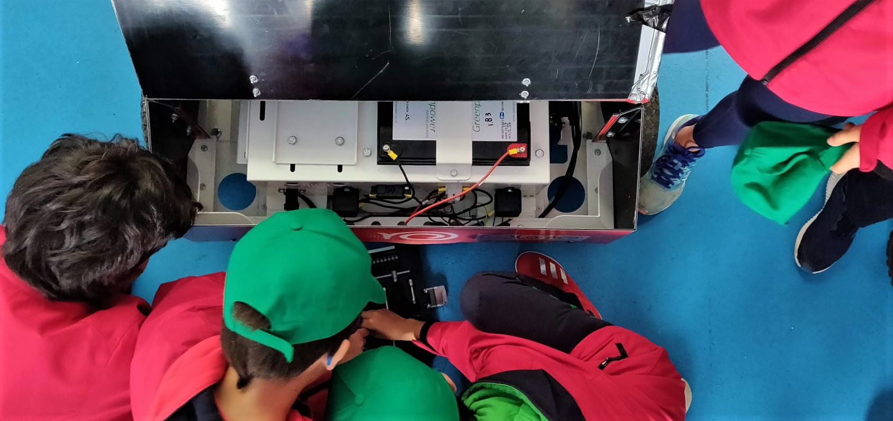

Experiencia Laboral
Profesor de KidsKitCar
El proyecto Kid's Kit-Car, viene de mano de una asociación sin ánimo de lucro, GreenPower IBERIA, que nace en enero de 2017 con la finalidad de potenciar el desarrollo de las competencias técnicas en la edad infantil y juvenil: la excusa, diseñar y construir sus propios coches para poder correr carreras, con prototipos eléctricos y medioambientalmente responsables. Kid’s Kit-Car tiene como marco de referencia el modelo desarrollado por Greenpower Education Trust en Reino Unido.
En concreto, el proyecto KKC Formula Goblin tiene como objetivo atraer a los alumnos de 9 a 11 años, a través de un modo entretenido e innovador, al mundo de la ingeniería. Kid's Kit-Car motiva a los alumnos a aplicar en la vida cotidiana los aprendizajes sobre mecánica básica y los distintos campos de estudio necesarios para llevar a cabo el proyecto.
HISTORIAL DE LOGROS CONSEGUIDOS POR MIS ALUMNOS
Durante los dos años que he trabajado como profesor de Kid's Kit-Car he trabajado con dos equipos distintos.
St GEORGE GOBLIN GATHERING 26/05/2019
LAURO GETXO GOBLIN GATHERING 31/03/2019
MUSKIZ REGIONAL COMPETITION 27/05/2018
GIJON-CITECH REGIONAL COMPETITION 28/04/2018
BIZKAIA REGIONAL COMPETITION 18/02/2018
Profesor de FIRST LEGO League
FIRST LEGO League Challenge es el programa para jóvenes de 10 a 16 años que permite descubrir la diversión por la ciencia, la tecnología, la ingeniería y las matemáticas (STEM) mientras resuelven problemáticas reales a través de un aprendizaje significativo y lúdico.
El programa inspira a los jóvenes a crear ideas, resolver problemas y superar obstáculos, a la vez que les permite ganar confianza en el uso apropiado de la tecnología y aprender procesos de diseño propios de la ingeniería. Los participantes colaboran, cooperan y desarrollan habilidades de trabajo en equipo imprescindibles en un mundo laboral dinámico y en constante cambio.